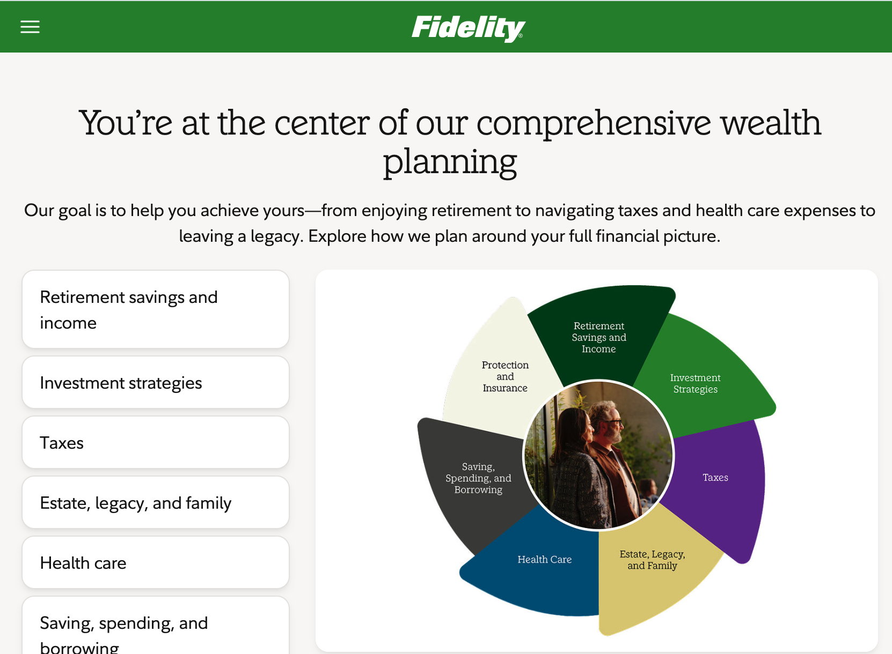

Enterprise Product Design
Designing enterprise platforms, design systems, AI-enabled experiences, and strategic products across complex financial-services environments.
Fidelity
Three areas of product designs
My work at Fidelity spans product ownership, organizational design infrastructure, and enterprise strategy.
01 · Cortex Platform
Enterprise product design and UX ownership.
02 · Design System + GenUI
Scaling design decisions across products,
teams, and AI-enabled experiences.
03 · EAHP
Strategic product design for a CIO-sponsored
enterprise initiative.
Across all three, my role goes beyond interface design. I frame ambiguous problems, connect research and stakeholder insight to product strategy, establish experience models, and use design to improve decisions.
01
Cortex Platform
Turning complex enterprise workflows into a coherent product experience.
Cortex was an enterprise platform initiative where I owned the UX direction and worked as the primary design lead.

Cortex involved complex enterprise workflows, multiple user needs, technical dependencies, and evolving product requirements.
The risk was treating each request as an individual feature and gradually creating a fragmented experience.
Understand the system before designing the interface.
I started by mapping the existing workflows across users, product capabilities, and technical dependencies.
I worked with Product and Engineering to understand where workflows overlapped, where requirements conflicted, and where the existing product model created unnecessary complexity.
The problem was systemic, not visual.
The recurring friction was not caused by individual screens. Different teams were solving related workflow problems independently.
That meant improving one screen at a time would not solve the underlying experience problem.
Shift from screen optimization to experience architecture.
I reframed the design effort around the complete workflow rather than individual screens.
The strategy was to establish a common model for how users move through the platform, what information they need at each decision point, and which patterns should remain consistent as the product evolved.
Turn the strategy into a usable product model.
I translated the experience model into workflows, interaction patterns, prototypes, and high-fidelity designs.
These artifacts gave Product and Engineering something concrete to evaluate while we worked through technical and product constraints.
Challenge the model before implementation.
I used prototypes, design reviews, and cross-functional working sessions to challenge the experience direction before implementation.
The question was not simply whether an individual screen was usable. It was whether the experience remained coherent across the broader workflow.
A scalable UX foundation for Cortex.
The work established a clearer UX foundation for Cortex and gave Product and Engineering a shared model for extending complex workflows.
Principal-level takeaway: When the problem is larger than the interface, the designer's job is to create clarity around the system.
02
Fidelity Design System + GenUI
Scaling design quality from individual products to the organization.
This work operated across Fidelity rather than a single product. The problem was not simply component consistency. It was how hundreds of designers and engineers make, reuse, and govern design decisions.
At enterprise scale, different product teams naturally develop their own patterns, interpretations, and solutions.
The result was duplicated design effort, growing system gaps, and increasing difficulty maintaining consistency across products.
Look for repeated problems, not missing components.
I looked across recurring design requests, system gaps, duplicated patterns, and the relationship between design decisions and engineering implementation.
This helped identify where teams were repeatedly solving the same problems independently.
The system needed to distribute decisions, not just components.
The deeper problem was not simply that teams lacked UI components. They lacked a sufficiently consistent way to make and reuse design decisions.
Treat the design system as organizational infrastructure.
I focused the work on reusable decisions, governance, contribution models, and clearer relationships between design and engineering.
The objective was to reduce repeated design work while making the system easier for teams to adopt and extend.
Build reusable patterns that teams can actually use.
I worked with Design and Engineering to identify high-value patterns, clarify system behavior, and establish reusable interaction guidance.
The system became a mechanism for distributing design decisions rather than simply distributing components.
Design systems change when interfaces become generative.
Generative UI introduces a different design-system problem. Interfaces can increasingly be assembled dynamically, so consistency cannot depend entirely on designers manually assembling approved components.
I worked on the experience and governance implications of GenUI, focusing on reusable patterns, interaction rules, and system guidance for AI-assisted product experiences.
Validate the system through adoption and real product needs.
Rather than measuring success only through visual consistency, I looked at whether teams could use the system to resolve recurring problems faster and with less duplicated work.
Faster design decisions at enterprise scale.
The work supported a system serving 14 product lines and 200+ designers and engineers.
It contributed to approximately 40% reduction in the design-system backlog and helped move recurring design work from weeks toward days.
Principal-level takeaway: At enterprise scale, the highest-value design work often becomes the system that determines how future products get designed.
“Ravi introduced AI-assisted approaches to our workflow that changed how we approached the problem entirely.”
03
EAHP
Turning enterprise strategy into a usable product experience.
EAHP was a CIO-sponsored initiative requiring design to operate across Product, Engineering, Enterprise Architecture, and senior stakeholders.

EAHP was a strategic enterprise initiative sponsored by the CIO organization.
Product, Engineering, Enterprise Architecture, and leadership each brought different requirements and perspectives to the problem.
Establish a shared understanding before designing the solution.
I worked across Product, Engineering, Enterprise Architecture, and leadership to understand how each group viewed the problem.
The first design challenge was therefore not the interface. It was establishing enough shared understanding to frame the right product problem.
The product needed to make complexity actionable.
The challenge was not simply presenting enterprise architecture or organizational information.
The experience needed to make complex information understandable enough for people to evaluate options and make decisions.
Design around decisions, not architecture.
I focused the experience around the decisions users needed to make rather than around the underlying technical architecture.
This provided a way to simplify the experience without hiding the complexity that mattered.
Use design artifacts as decision-making tools.
I translated the strategy into experience models, workflows, prototypes, and product narratives.
These artifacts made complex requirements visible and gave different stakeholder groups a concrete way to evaluate the proposed experience.
Use collaboration to surface assumptions and tradeoffs.
I used the design work with Product, Engineering, Architecture, and leadership to expose assumptions, clarify tradeoffs, and resolve areas of disagreement.
The design process therefore became part of the product decision-making process rather than a final approval step.
A clearer product direction for a strategic initiative.
The work established a clearer UX direction for the initiative and created a shared model for discussing experience decisions across Product, Engineering, Architecture, and senior stakeholders.
Principal-level takeaway: Design creates strategic value when it improves the quality of decisions, not simply when it produces better interfaces.
How I Approach
Product Design
Start With the Problem
I start by understanding the problem before moving into solutions. That means looking at the people involved, the workflow, the business context, and the constraints shaping the experience.
Turn Complexity Into Clarity
Research, workflow mapping, stakeholder conversations, and prototyping help make complexity visible. I use those inputs to identify where the real problems are and where design can have the greatest impact.
Design With the Team
Good product decisions rarely happen in isolation. I work closely with Product, Engineering, Architecture, and subject-matter experts to understand constraints, explore options, and build alignment around the direction.
Validate, Learn, and Refine
I use prototypes, feedback, research, and technical input to test assumptions and refine the experience before it becomes expensive to change.
Focus on Better Decisions
The outcome is not simply a polished interface. It is a clearer understanding of the problem, stronger product decisions, and an experience that can work within the realities of the organization.